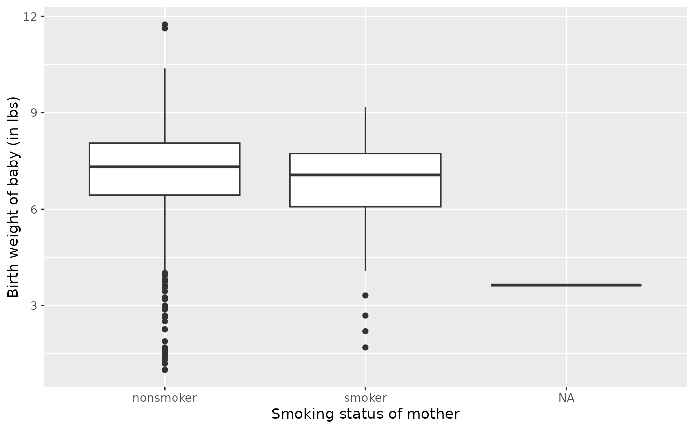

In 2004, the state of North Carolina released to the public a large data set containing information on births recorded in this state. This data set has been of interest to medical researchers who are studying the relation between habits and practices of expectant mothers and the birth of their children. This is a random sample of 1,000 cases from this data set.
ncbirths
A data frame with 1000 observations on the following 13 variables.
Father's age in years.
Mother's age in years.
Maturity status of mother.
Length of pregnancy in weeks.
Whether the birth was classified as premature (premie) or full-term.
Number of hospital visits during pregnancy.
Weight gained by mother during pregnancy in pounds.
Weight of the baby at birth in pounds.
Whether baby was classified as low birthweight
(low) or not (not low).
Gender of the baby, female or male.
Status of the mother as a nonsmoker or a smoker.
Whether mother is married or not married at birth.
Whether mom is white or not white.
library(ggplot2) ggplot(ncbirths, aes(x = habit, y = weight)) + geom_boxplot() + labs(x = "Smoking status of mother", y = "Birth weight of baby (in lbs)")ggplot(ncbirths, aes(x = whitemom, y = visits)) + geom_boxplot() + labs(x = "Mother's race", y = "Number of doctor visits during pregnancy")#> Warning: Removed 9 rows containing non-finite values (stat_boxplot).ggplot(ncbirths, aes(x = mature, y = gained)) + geom_boxplot() + labs(x = "Mother's age category", y = "Weight gained during pregnancy")#> Warning: Removed 27 rows containing non-finite values (stat_boxplot).